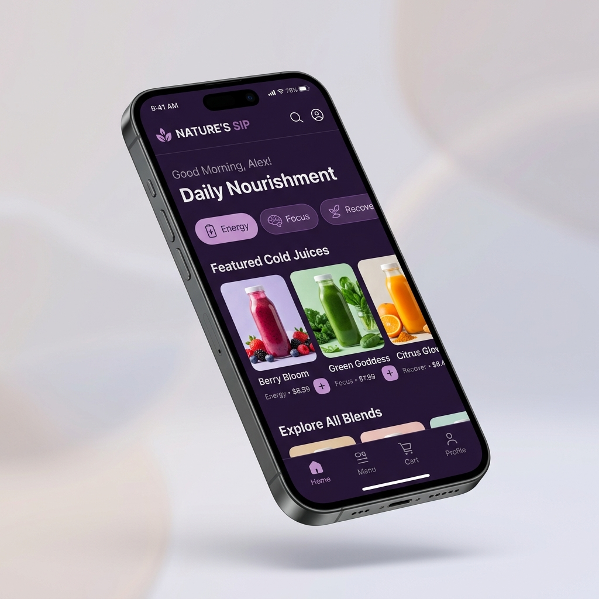
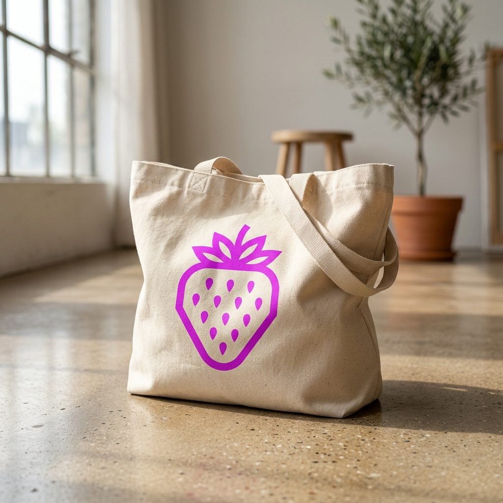
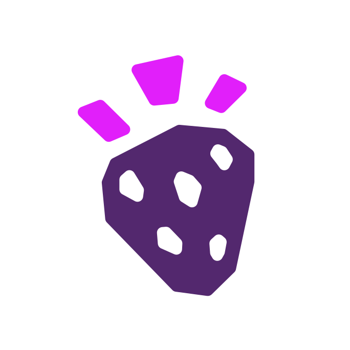

Transparent Packaging
Product colour leads while purple and neon provide controlled recognition.

Curated Applications
The brand in use.
A curated view of the system across touchpoints.
This gallery is not an asset dump. It is a working overview of where the system appears: packaging, photography, digital interfaces, campaign formats, icon logic, and missing artifacts.
Transparent Packaging
Product colour leads while purple and neon provide controlled recognition.

Daily Nourishment UI
Need-state browsing and clearer product decisions.

Merch
Reusable, simple, and durable brand applications.
Photography
Warm, human, and naturally coloured.

Sourcing & Interface Artifacts
Cup stickers, sourcing pages, nutrition labels, and app UI logic.

Daily Use
Tactile moments that make the brand feel routine-ready.

Icon Mark
Compact identifier for app icons, merch, and small-scale use.
Negative Logo Use Exports
Approved visual misuse cards for the Logo section.
Boo Expression Sheet
Assistance, error, loading, empty, and celebration expressions.
Expanded Fruit System
Geometric fruit set with controlled exclamation integration.
Packaging Mockup Set
Cups, wrappers, bags, napkins, cutlery, straw packaging, and merch.
Ad Templates
Poster, email, flyer, social, offer, and campaign variants.
UI Mockups
Website, app, source page, nutrition detail, and reorder flows.